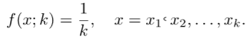
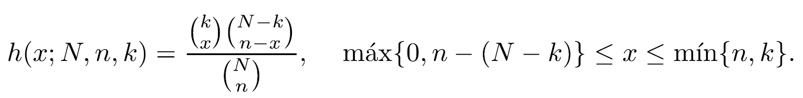

-
Distribución Uniforme Discreta ↓
- Definición y teorema
- Ejemplos
-
Proceso de Bernoulli ↓
- Definición y teorema
- Ejemplos
-
Distribución Binomial ↓
- Definición y teorema
- Ejemplos
-
Distribución Multinomial ↓
- Definición
- Ejemplos
-
Distribución Hipergeómetrica ↓
- Definición y teorema
- Ejemplos
-
Distribución Binomial Negativa ↓
- Definición y teorema
- Ejemplos
Que es un espacio muestral?
Antes de definir que es un espacio muestral debemos conocer dos conceptos: observación y experimento
Nos referiremos a cualquier registro de información, ya sea numérico o categórico, como una observación.
Los estadísticos utilizan la palabra experimento para describir cualquier proceso que genere un conjunto de datos a partir de la observación.
Estamos particularmente interesados en las observaciones que se obtienen por la repetición del experimento varias veces.
Definición
El conjunto de todos los resultados posibles de un experimento estadístico se llama espacio muestral y se representa con el símbolo S.
Distribución Uniforme Discreta
La más simple de todas las distribuciones de probabilidad discreta es aquella donde la variable aleatoria toma cada uno de sus valores con una probabilidad idéntica. Tal distribución de probabilidad se denomina distribución uniforme discreta.
Definición
Si la variable aleatoria X toma los valores x1, x2,...,xk, con idénticas probabilidades, entonces, la distribución uniforme discreta está dada por
Ejemplos De Distribución Uniforme Discreta
Ejemplos:
Proceso de Bernoulli
Definición:
Estrictamente hablando, el proceso de Bernoulli debe tener las siguientes propiedades: 1. El experimento consiste en n ensayos que se repiten. 2. Cada ensayo produce un resultado que se puede clasifi car como éxito o fracaso. 3. La probabilidad de un éxito, que se denota con p, permanece constante de un ensayo a otro. 4. Los ensayos que se repiten son independientes
Ejemplos del Proceso de Bernoulli
Ejemplos:
Distribución Binomial
Definición:
La distribución binomial se refiere a una serie de n pruebas en las que cada prueba solo pueden resultar en uno de dos estados: p->exito, q->fracaso;
Los n eventos deben ser independientes para poder aplicar la siguiente funcion de probabilidad:
Al tener una variable aleatoria X cualquiera, que este definida en los n resultados de las n pruebas, la funcion de probabilidad es aplicable, y su grafica se verá:
Ejemplos de Distribución Binomial
Ejemplos:
Distribución Multinomial
El experimento binomial se convierte en un experimento multinomial si cada prueba tiene más de dos resultados posibles. Por ello, la clasifi cación de un producto fabricado como ligero, pesado o aceptable, y el registro de los accidentes en cierto crucero de acuerdo con el día de la semana, constituyen experimentos multinomiales. Extraer una carta de una baraja con reemplazo también es un experimento multinomial si los 4 palos son los resultados de interés.
Ejemplos de Distribución Multinomial
Ejemplos:
-
Ejemplos:
Distribución Hipergeómetrica
Definición:
Definición:
La manera más simple de ver la diferencia entre la distribución binomial y la distribución hipergeométrica está en la forma en que se realiza el muestreo.
Mientrás que en la binomial se requiere independencia entre las pruebas y por tanto el muestreo se debe efectuar con reemplazo de cada artículo después de que se observe, la distribución hipergeométrica no requiere independencia y se basa en el muestreo que se realiza sin reemplazo.
Se conoce como un experimento hipergeométrico a aquel que posee
las siguientes dos propiedades:
1. Se selecciona una muestra aleatoria de tamaño n sin reemplazo de N artículos.
2. k de los N artículos se pueden clasificar como éxitos y N − k se clasifican como fracasos.
El número X de éxitos de un experimento hipergeométrico se denomina variable
aleatoria hipergeométrica. En consecuencia, la distribución de probabilidad de
la variable hipergeométrica se llama distribución hipergeométrica, y sus valores
se denotan como h(x; N, n, k), debido a que dependen del número de éxitos k en el
conjunto N del que seleccionamos n artículos.
La distribución de probabilidad de la variable aleatoria hipergeométrica X, el número de éxitos en una muestra aleatoria de tamaño n que se selecciona de N artículos, en los que k se denomina éxito y N − k fracaso, es
El rango de x puede determinarse mediante los tres coeficientes binomiales en la definición, donde x y n − x no son más que k y N − k; respectivamente; y ambas no pueden ser menores que 0. Por lo general, cuando tanto k (el número de éxitos) como N − k (el número de fracasos) son mayores que el tamaño de la muestra n, el rango de una variable aleatoria hipergeométrica será x = 0, 1, . . . , n.
Los tipos de aplicaciones de la distribución hipergeométrica son muy similares a los de la distribución binomial, además de que se encuentran en muchas areas, con gran uso en muestreo de aceptación, pruebas electrónicas y garantía de calidad.
Ejemplos de Distribución Hipergeómetrica
Ejemplos:
-
Ejemplos:
Distribución Binomial Negativa
El número X de pruebas que genera k éxitos en un experimento binomial negativo se llama variable aleatoria binomial negativa y su distribución de probabilidad se llama distribución binomial negativa.